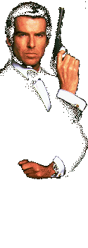

|  |
「大勢が楽しい！郷愁のバーチャル鬼ごっこ」 任天堂では、昼休み中や仕事が終わってから業務とは別に、スタッフ達がこのゲームの対戦に熱くなっています。先輩も後輩もありません。子供の頃、放課後に友達と校庭を駆け回ったあの感覚でしょうか？ そう、対戦モードの面白さは、幼い頃に誰もが経験した「拳銃ごっこ」や「鬼ごっこ」を、画面のなかにリアルに再現するというバーチャル性にあります。ただし、これは相手を狙い撃って倒すゲームですから、そんなほのぼのとしたものではなくて、かなりハードなテイストが盛られているわけですが ．．。 ほぼ映画のシナリオ通りに進んでいくミッションゲーム（ひとり用）と違い、各プレイヤーが自由に、好き勝手にフィールドを動き回り、相手を倒すというシンプルでとっつきやすいところも、対戦プレイならではの魅力といえるでしょう。昔、ごっこ遊びでは臨機応変にルールを変化させ、自由に遊ぶことができました。だからこそあんなに楽しかったのではないでしょうか？このゲームでは、撃ち合いという内容のシンプルさと、多彩な設定との組み合わせにより、まさにむかしのようなあの自由で果てしない遊び方ができるのです！ |
| 任天堂開発スタッフ |
| 櫛田理子から一言のページへ |